토목기사 (2017-03-05 기출문제)
1과목: 응용역학
1. 그림과 같은 사다리꼴 단면에서 x축에 대한 단면 2차모멘트 값은?
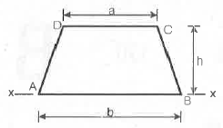
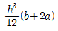
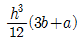
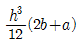
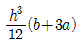
(정답률: 56%)

2. 다음 그림과 같이 강선 A와 B가 서로 평형상태를 이루고 있다. 이때 각도 θ의 값은?
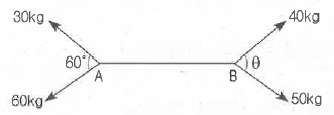
- 67.84°
- 56.63°
- 42.26°
- 28.35°
(정답률: 73%)
3. 아래 그림과 같은 단순보에 등분포하중 w가 작용하고 있을 때 이 보에서 휨모멘트에 의한 변형에너지는? (단, 보의 EI는 일정하다.)
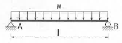
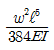
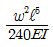
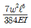
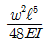
(정답률: 64%)
4. 단면 2차모멘트의 특성에 대한 설명으로 옳지 않은 것은?
- 도심축에 대한 단면 2차모멘트는 0이다.
- 단면 2차모멘트는 항상 정(+)의 값을 갖는다.
- 단면 2차모멘트가 큰 단면은 휨에 대한 강성이 크다.
- 정다각형의 도심축에 대한 간면 2차모멘트는 축이 회전해도 일정하다.
(정답률: 60%)
5. 그림 (a)와 (b)의 중앙점의 처짐이 같아지도록 그림 (b)의 등분포하중 w를 그림 (a)의 하중 P의 함수로 나타내면?
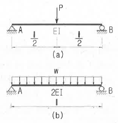
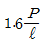
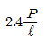
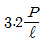
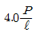
(정답률: 62%)
6. 그림과 같이 길이가 2L인 보에 w의 등분포하중이 작용할 때 중앙지점을 δ만큼 낮추면 중간지점의 반력 (RB)값은 얼마인가?
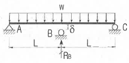
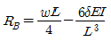
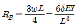
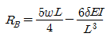
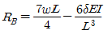
(정답률: 63%)
7. 다음 그림의 단순보에서 최대 휨모멘트가 발생되는 위치는 지점 A로부터 얼마나 떨어진 곳인가?
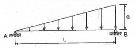
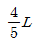
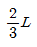
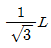
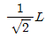
(정답률: 72%)
8. 지름 2cm, 길이 2m인 강봉에 3000kg의 인장하중을 작용시킬 때 길이가 1cm가 늘어났고, 지름이 0.002cm 줄어 들었다. 이 때 전단 탄성계수는 약 얼마인가?
- 6.24×104 kg/cm2
- 7.96×104 kg/cm2
- 8.71×104 kg/cm2
- 9.67×104 kg/cm2
(정답률: 51%)
9. 그림과 같은 2부재 트러스의 B에 수평하중 P가 작용한다. B절점의 수평변위 δB는 몇 m 인가? (단, EA는 두 부재가 모두 같다.)
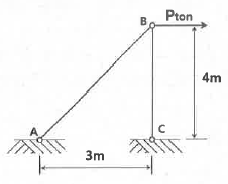
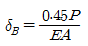
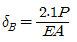
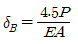
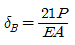
(정답률: 66%)
10. 외반경 R1, 내반경 R2인 중공(中空) 원형단면의 핵은? (단, 핵의 반경을 e로 표시함)
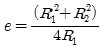
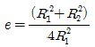
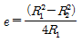
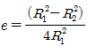
(정답률: 56%)
11. 그림과 같은 속이 찬 직경 6cm의 원형축이 비틀림 T=400kgㆍm를 받을 때 단면에서 발생하는 최대 전단응력은?
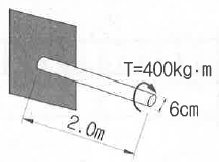
- 926.5kg/cm2
- 932.6kg/cm2
- 943.1kg/cm2
- 950.2kg/cm2
(정답률: 61%)
12. 그림과 같은 3힌지 라멘의 휨모멘트선도(BMD)는?
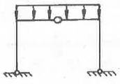
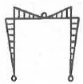
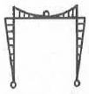
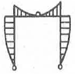
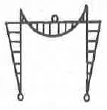
(정답률: 80%)
13. 그림과 같은 트러스에서 AC부재의 부재력은?
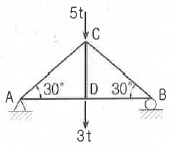
- 인장 4t
- 압축 4t
- 인장 8t
- 압축 8t
(정답률: 70%)
14. 그림과 같은 양단 고정보에 등분포하중이 작용할 경우 지점 A의 휨모멘트 절대값과 보 중앙에서의 휨모멘트 절대값의 합은?
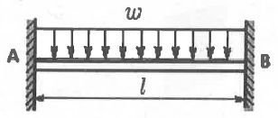
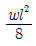
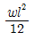
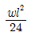
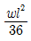
(정답률: 53%)
15. 그림과 같은 내민보에서 D점에 집중하중 P=5t이 작용할 경우 C점의 휨모멘트는 얼마인가?
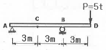
- -2.5tㆍm
- -5tㆍm
- -7.5tㆍm
- -10tㆍm
(정답률: 76%)
16. 아래 그림과 같은 하중을 받는 단순보에 발생하는 최대 전단응력은?
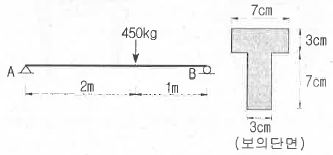
- 44.8kg/cm2
- 34.8kg/cm2
- 24.8kg/cm2
- 14.8kg/cm2
(정답률: 62%)
17. 15cm×25cm 의 직사각형 단면을 가진 길이 5m인 양단힌지 기둥이 있다. 세장비는?
- 139.2
- 115.5
- 93.6
- 69.3
(정답률: 73%)
18. 다음 보의 C점의 수직처짐량은?
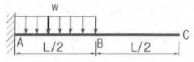
(정답률: 65%)
19. 캔틸레버 보에서 보의 끝 B점에 집중하중 P와 우력모멘트 Mo가 적용하고 있다. B점에서의 연직변위는 얼마인가? (단, 보의 EI는 일정하다.)
(정답률: 66%)
20. 그림과 같은 3활절 아치에서 D점에 연직하중 20t이 작용할 때 A점에 작용하는 수평반력 HA는?
- 5.5t
- 6.5t
- 7.5t
- 8.5t
(정답률: 77%)
2과목: 측량학
21. 삼각수준측량에서 정밀도 10-5의 수준차를 허용할 경우 지구곡률을 고려하지 않아도 되는 최대시준거리는? (단, 지구곡률반지름 R=6370 km이고, 빛의 굴절계수는 무시)
- 35m
- 64m
- 70m
- 127m
(정답률: 36%)
22. 측점 M의 표고를 구하기 위하여 수준점 A, B, C로부터 수준측량을 실시하여 표와 같은 결과를 얻었다면 M의 표고는?
- 13.09 m
- 13.13 m
- 13.17 m
- 13.22 m
(정답률: 72%)
23. 답사나 홍수 등 급하게 유속관측을 필요로 하는 경우에 편리하여 주로 이용하는 방법은?
- 이중부자
- 표면부자
- 스크루(screw)형 유속계
- 프라이스(price)식 유속계
(정답률: 76%)
24. 토적곡선(mass curve)을 작성하는 목적으로 가장 거리가 먼 것은?
- 토량의 운반거리 산출
- 토공기계의 선정
- 토량의 배분
- 교통량 산정
(정답률: 73%)
25. 다음 중 다각측량의 순서로 가장 적합한 것은?
- 계획 - 답사 - 선점 - 조표 - 관측
- 계획 - 선점 - 답사 - 조표 - 관측
- 계획 - 선점 - 답사 - 관측 - 조표
- 계획 - 답사 - 선점 - 관측 - 조표
(정답률: 60%)
26. 국토지리정보원에서 발급하는 기준점 성과표의 내용으로 틀린 것은?
- 삼각점의 위치한 평면좌표계의 원점을 알 수 있다.
- 삼각점 위치를 결정한 관측방법을 알 수 있다.
- 삼각점의 경고, 위도, 직각좌표를 알 수 있다.
- 삼각점의 표고를 알 수 있다.
(정답률: 61%)
27. 노선측량에서 교각이 32°15‘ 00“, 곡선 반지름의 600m 일 때의 곡선장(C.L.)은?
- 355.52m
- 337.72m
- 328.75m
- 315.35m
(정답률: 69%)
28. 한 변의 길이가 10m인 정각사각형 토지를 축척 1:600 도상에서 관측한 결과, 도상의 변 관측 오차가 0.2mm 씩 발생하였다면 실제면적에 대한 오차 비율(%)은?
- 1.2%
- 2.4%
- 4.8%
- 60.%
(정답률: 47%)
29. 그림과 같은 수준망을 각각의 환(Ⅰ~Ⅳ)에 따라 폐합 오차를 구한 결과가 표와 같다. 폐합 오차의 한계가 ±1.0√Scm일 때 우선적으로 재 관측할 필요가 있는 노선은? (단, S:거리[km])
- e노선
- f노선
- g노선
- h노선
(정답률: 62%)
30. 지성선에 해당하지 않는 것은?
- 구조선
- 능선
- 계곡선
- 경사변환선
(정답률: 57%)
31. 토털스테이션으로 각을 측정할 때 기계의 중심과 측점이 일치하지 않아 0.5mm의 오차가 발생 하였다면 각 관측 오차를 2“ 이하로 하기 위한 변의 최소 길이는?
- 82.501 m
- 51.566 m
- 8.250 m
- 5.157 m
(정답률: 61%)
32. 삼각형 A, B, C의 내각을 측정하여 다음과 같은 경과를 얻었다. 오차를 보정한 각 B의 최확값은?
- 60°00‘20“
- 60°00‘22“
- 60°00‘33“
- 60°00‘44“
(정답률: 42%)
33. 지구의 형상에 대한 설명으로 틀린 것은?
- 회전타원체는 지구의 형상을 수학적으로 정의한 것이고, 어느 하나의 국가에 기준으로 채택한 타원체를 기준타원체라 한다.
- 지오이드는 물리적인 형상을 고려하여 만든 불규칙한 곡면이며, 높이 측정의 기준이 된다.
- 지오이드 상에서 중력 포텐셜의 크기는 중력이상에 의하여 달라진다.
- 임의 지점에서 회전타원체에 내린 법선이 적도면과 만나는 각도를 측지위도라 한다.
(정답률: 56%)
34. 완화곡선에 대한 설명으로 옳지 않은 것은?
- 완화곡선의 곡선 반지름은 시점에서 무한대, 종점에서 원곡선의 반지름 R로 된다.
- 클로소이드의 형식에는 S형, 복합형, 기본형 등이 있다.
- 완화곡선의 접선은 시점에서 원호에, 종점에서 직선에 접한다.
- 모든 클로소이드는 닮은꼴이며 클로소이드 요소에는 길이의 단위를 가진 것과 단위가 없는 것이 있다.
(정답률: 77%)
35. 25 cm × 25 cm인 항공사진에서 주점기선의 길이가 10cm 일 때 이 항공사진의 중복도는?
- 40%
- 50%
- 60%
- 70%
(정답률: 59%)
36. 노선 설치 방법 중 좌표법에 의한 설치방법에 대한 설명으로 틀린 것은?
- 토털스테이션, GPS 등과 같은 장비를 이용하여 측점을 위치시킬 수 있다.
- 좌표법에 의한 노선의 설치는 다른 방법보다 지형의 굴곡이나 시통 등의 문제가 적다.
- 좌표법은 평면곡선 및 종단곡선의 설치요소를 동시에 위치시킬 수 있다.
- 평면적인 위치의 측설을 수행하고 지형 표고를 관측하여 종단면도를 작성 할 수 있다.
(정답률: 45%)
37. 촬영고도 800m의 연직사진에서 높이 20m에 대한 시차차의 크기는? (단, 초점거리는 21cm, 사진트기는 23×23cm, 종중복도는 60% 이다.)
- 0.8mm
- 1.3mm
- 1.8mm
- 2.3mm
(정답률: 45%)
38. 다음 설명 중 옳지 않은 것은?
- 측지학적 3차원 위치결정이란 경도, 위도 및 높이를 산정하는 것이다.
- 측지학에서 면적이란 일반적으로 지표면의 경계선을 어떤 기준면에 투영하였을 때의 면적을 말한다.
- 해양측지는 해양상의 위치 및 수심의 경정, 해저지질조사 등을 목적으로 한다.
- 원격탐사는 피사체와 직접 접촉에 의해 획득한 정보를 이용하여 정량적 해석을 하는 기법이다.
(정답률: 72%)
39. 등고선의 성질에 대한 설명으로 옳지 않은 것은?
- 등고선은 분수선(능선)과 평행한다.
- 등고선은 도면 내ㆍ외에서 폐합하는 폐곡선이다.
- 지도의 도면 내에서 폐합하는 경우 등고선의 내부에는 산꼭대기 또는 분지가 있다.
- 절벽에서 등고선이 서로 만날 수 있다.
(정답률: 67%)
40. 하천의 유속측정결과, 수면으로부터 깊이의 2/10, 4/10, 6/10, 8/10 되는 곳의 유속(m/s)이 각각 0.662, 0.552, 0.442, 0.332 이었다면 3점법에 의한 평균유속은?
- 0.4603 m/s
- 0.4695 m/s
- 0.5246 m/s
- 0.5337 m/s
(정답률: 70%)
3과목: 수리학 및 수문학
41. 댐의 여수로에서 도수를 발생시키는 목적 중 가장 중요한 것은?
- 유수의 에너지 감세
- 취수를 위한 수위상승
- 댐 하류부에서의 유속의 증가
- 댐 하류부에서의 유량의 증가
(정답률: 58%)
42. 강우계의 관측분포가 균일한 평야지역의 작은 유역에 발생한 강우에 적합한 유역 평균 강우량 산정법은?
- Thiessen의 가중법
- Talbot의 강도법
- 산술평균법
- 등우선법
(정답률: 64%)
43. 관수로의 흐름이 층류인 경우 마찰손실계수(f)에 대한 설명으로 옳은 것은?
- 조도에만 영향을 받는다.
- 레이놀즈수에만 영향을 받는다.
- 항상 0.2778로 일정한 값을 갖는다.
- 조도와 레이놀주수에 영향을 받는다.
(정답률: 63%)
44. 정상류(steady flow)의 정의로 가장 적합한 것은?
- 수리학적 특성이 시간에 따라 변하지 않는 흐름
- 수리학적 특성이 공간에 따라 변하지 않는 흐름
- 수리학적 특성이 시간에 따라 변하는 흐름
- 수리학적 특성이 공간에 따라 변하는 흐름
(정답률: 69%)
45. 단위유량도 작성 시 필요 없는 사항은?
- 유효유량의 지속시간
- 직접유출량
- 유역면적
- 투수계수
(정답률: 68%)
46. 중량이 600N, 비중이 3.0인 물체를 물(담수)속에 넣었을 때 물 속에서의 중량은?
- 100N
- 200N
- 300N
- 400N
(정답률: 41%)
47. 개수로 내 흐름에 있어서 한계수심에 대한 설명으로 옳은 것은?
- 상류쪽의 저항이 하류쪽의 조건에 따라 변한다.
- 유량이 일정할 때 비력이 최대가 된다.
- 유량이 일정할 때 비에너지가 최소가 된다.
- 비에너지가 일정할 때 유량이 최소가 된다.
(정답률: 54%)
48. 대수층에서 지하수가 2.4m의 투과거리를 통과하면서 0.4m 수두손실이 발생할 때 지하수의 유속은? (단, 투수계수 = 0.3 m/s)
- 0.01 m/s
- 0.⑤ m/s
- 0.1 m/s
- 0.5 m/s
(정답률: 65%)
49. 우량관측소에서 측정된 5분단위 강우량 자료가 표와 같을 때 10분 지속 최대 강우강도는?
- 17 mm/hr
- 48 mm/hr
- 102 mm/hr
- 120 mm/hr
(정답률: 69%)
50. 물 속에 존재하는 임의의 면에 작용하는 정수압의 작용방향은?
- 수면에 대하여 수평방향으로 작용한다.
- 수면에 대하여 수직방향으로 작용한다.
- 정수압의 수직압은 존재하지 않는다.
- 임의의 면에 직각으로 작용한다.
(정답률: 67%)
51. 어떤 유역에 내린 호우사상의 시간적 분포가 표와 같고 유역의 출구에서 측정한 지표유출량이 15mm 일 때 Φ-지표는?
- 2 mm/h
- 3 mm/hr
- 5 mm/hr
- 7 mm/hr
(정답률: 51%)
52. 흐르는 유체 속에 잠겨있는 물체에 작용하는 항력과 관계가 없는 것은?
- 유체의 밀도
- 물체의 크기
- 물체의 형상
- 물체의 밀도
(정답률: 61%)
53. 수심 h, 단면적 A, 유량 Q로 흐르고 있는 개수로에서 에너지 보정계수를 α라고 할 때 비에너지 He를 구하는 식은? (단, h=수심, g=중력가속도)
(정답률: 66%)
54. 삼각위어에 있어서 유량계수가 일정하다고 할 때 유량변화율(dQ/Q)이 1% 이하가 되기 위한 월류수심의 변화율(dh/h)은?
- 0.4% 이하
- 0.5% 이하
- 0.6% 이하
- 0.7% 이하
(정답률: 55%)
55. 그림과 같이 반지름 R인 원형관에서 물이 층류로 흐를 때 중심부에서의 최대속도를 V라 할 경우 평균속도 Vm은?
(정답률: 62%)
56. 두 수조가 관길이 L=50m, 지름 D=0.8m, Manning의 조도계수 n=0.013인 원형관으로 연결되어 있다. 이 관을 통하여 유량 Q=1.2m3/s의 난류가 흐를 때, 두 수조의 수위차(H)는? (단, 마찰, 단면 급확대 및 급축소 손실만을 고려한다.)
- 0.98m
- 0.85m
- 0.54m
- 0.36m
(정답률: 41%)
57. 저수지의 측벽에 폭 20cm, 높이 5cm의 직사각형 오리피스를 설치하여 유량 200L/s를 유출시키려고 할 때 수면으로부터의 오리피스 설치 위치는? (단, 유량계수 C = 0.62)
- 33m
- 43m
- 53m
- 63m
(정답률: 54%)
58. 컨테이너 부두 안벽에 입사하는 파랑의 입사파고가 0.8m 이고, 안벽에서 반사된 파랑의 반사피고가 0.3m 일 때 반사율은?
- 0.325
- 0.375
- 0.425
- 0.475
(정답률: 65%)
59. 흐름에 대한 설명 중 틀린 것은?
- 흐름이 층류일 때는 뉴톤의 점성 법칙을 적용할 수 있다.
- 등류란 모든 점에서의 흐름의 특성이 공간에 따라 변하지 않는 흐름이다.
- 유관이란 개개의 유체입자가 흐르는 경로를 말한다.
- 유선이란 각 점에서 속도벡터에 접하는 곡선을 연결한 선이다.
(정답률: 51%)
60. DAD(depth-area-duration)해석에 관한 설명으로 옳은 것은?
- 최대 평균 우량깊이, 유역면적, 강우강도와의 관계를 수립하는 작업이다.
- 유역면적을 대수축(logarithmic scale)에 최대평균강우량을 산수축(arithmetic scale)에 표시한다.
- DAD 해석 시 상대습도 자료가 필요하다.
- 유역면적과 증발산량과의 관계를 알 수 있다.
(정답률: 48%)
4과목: 철근콘크리트 및 강구조
61. 나선철근으로 둘러싸인 압축부재의 축방향 주철근의 최소 개수는?
- 3개
- 4개
- 5개
- 6개
(정답률: 61%)
62. 아래 그림에서 빗금 친 대칭T형보의 공칭모멘트강도(Mn)는? (단, 경간은 3200mm, As=7094mm2, fck=28MPa, fy=400MPa)
- 1475.9kNㆍm
- 1583.2kNㆍm
- 1648.4kNㆍm
- 1721.6kNㆍm
(정답률: 53%)
63. 아래 그림과 같은 보의 단면에서 표피철근의 간격 s는 약 얼마인가? (단, 습윤환경에 노출되는 경우로서, 표피철근의 표면에서 부재 측면가지 최단거리 (cc)는 50mm, fck=28MPa, fy=400MPa이다.)
- 170mm
- 190mm
- 220mm
- 240mm
(정답률: 41%)
64. 프리스트레스의 손실을 초래하는 요인 중 포스트텐션 방식에서만 두드러지게 나타나는 것은?
- 마찰
- 콘크리트의 탄성수축
- 콘크리트의 크리프
- 정착장치 활동
(정답률: 58%)
65. 다음 중 최소 전단철근을 배치하지 않아도 되는 경우가 아닌 것은? (단, 인 경우)
- 슬래브나 확대기초의 경우
- 전단철근이 없어도 계수휨모멘트와 계수전단력에 저항할 수 있다는 것을 실험에 의해 확인할 수 있는 경우
- T형보에서 그 깊이가 플랜지 두께의 2.5배 또는 복부폭의 1/2 중 튼 값 이하인 보
- 전체깊이가 450mm 이하인 보
(정답률: 60%)
66. 철근 콘크리트 휨부재에서 최소철근비을 규정한 이유로 가장 적당한 것은?
- 부재의 경제적인 단면 설계를 위해서
- 부재의 사용성을 증진시키기 위해서
- 부재의 시공 편의를 위해서
- 부재의 급작스런 파괴를 방지하기 위해서
(정답률: 70%)
67. 순단면의 볼트의 구멍 하나를 제외한 단면(즉, A-B-C 단면)과 같도록 피치(s)를 결정하면? (단, 구멍의 직경은 18mm이다.)
- 50mm
- 55mm
- 60mm
- 65mm
(정답률: 65%)
68. 다음 그림과 같은 맞대기 용접 이음에서 이음의 응력을 구하면?
- 150.0MPa
- 106.1MPa
- 200.0MPa
- 212.1MPa
(정답률: 71%)
69. 정착구와 커플러의 위치에서 프리스트레스 도입 직후 포스트텐션 긴장재의 응력은 얼마 이하로 하여야 하는가? (단, fpu는 긴장재의 설계기준인장강도)
- 0.6fpu
- 0.74fpu
- 0.70fpu
- 0.85fpu
(정답률: 50%)
70. 지간이 4m이고 단순지지된 1방향 슬래브에서 처짐을 계산하지 않는 경우 슬래브의 최소두께로 옳은 것은? (단, 보통종량 콘크리트를 사용하고, fck=28MPa, fy=400MPa인 경우)
- 100mm
- 150mm
- 200mm
- 250mm
(정답률: 43%)
71. 설계기준 압축강도(fck)가 35MPa인 보통중량 콘크리트로 제작된 구조물에서 압축이형 철근으로 D29(공칭지름 28.6mm)를 사용한다면 기본정착길이는? (단, fy=400MPa)
- 483mm
- 492mm
- 503mm
- 512mm
(정답률: 46%)
72. bw=250mm, d=500mm, fck=21MPa, fy=400MPa인 직사각형 보에서 콘크리트가 부담하는 설계전단강도(øVc)는?
- 71.6kN
- 76.4kN
- 82.2kN
- 91.5kN
(정답률: 59%)
73. 옹벽의 구조해석에 대한 설명으로 틀린 것은?
- 뒷부벽은 직사각형보로 설계하여야 하며, 앞부벽은 T형보로 설계하여야 한다.
- 저판의 뒷굽판은 정확한 방법이 사용되지 않는 한, 뒷굽판 상부에 재하되는 모든 하중을 지지하도록 설계하여야 한다.
- 캔틸레버식 옹벽의 저판은 전면벽과의 접합부를 고정단으로 간주한 캔틸레버로 가정하여 단면을 설계할 수 있다.
- 부벽식 옹벽의 전면적은 3변 지지된 2방향 슬래브로 설계할 수 있다.
(정답률: 70%)
74. 처짐과 균열에 대한 다음 설명 중 틀린 것은?
- 처짐에 영향을 미치는 인자로는 하중, 온도, 습도, 재령, 함수량, 압축철근의 단면적 등이다.
- 크리프, 건조수축 등으로 인하여 시간의 경과와 더불어 진행되는 처짐이 탄성처짐이다.
- 균열폭을 최소화하기 위해서는 적은 수의 굵은 철근보다는 많은 수의 가는 철근을 인장측에 장 분포시켜야 한다.
- 콘크리트 표면의 균열폭은 피복두께의 영향을 받는다.
(정답률: 52%)
75. 그림과 같은 단면을 갖는 지간 10m의 PSC보에 PS 강재가 100mm의 편심거리를 가지고 직선배치 되어있다. 자중을 포함한 계수등분포하중 16kN/m가 보에 작용할 때, 보 중앙단면 콘크리트 상연응력은 얼마인가? (단, 유효 프리스트레스 힘 Pe=2400kN)
- 11.2MPa
- 12.8MPa
- 13.6MPa
- 14.9MPa
(정답률: 42%)
76. Mu=170kNㆍm의 계수 모멘트 하중을 지지하기 위한 단철근 직사각형 보의 필요한 철근량(As)을 구하면? (단, bw=300mm, d=450mm, fck=28MPa, fy=350MPa, ∅=0.85 이다.)
- 1070mm2
- 1175mm2
- 1280mm2
- 1375mm2
(정답률: 40%)
77. 플레이트 보(plate girder)의 경제적인 높이는 다음 중 어느 것에 의해 구해지는가?
- 전단력
- 지압력
- 휨모멘트
- 비틀림모멘트
(정답률: 52%)
78. 폭(bw)이 400mm, 유효깊이(d)가 500mm 인 단철근 직사각형보 단면에서, 강도설계법에 의한 균형철근량은 약 얼마인가? (단, fck=35MPa, fy=400MPa)(오류 신고가 접수된 문제입니다. 반드시 정답과 해설을 확인하시기 바랍니다.)
- 6135mm2
- 6623mm2
- 7149mm2
- 7841mm2
(정답률: 59%)
79. 아래 그림과 같은 단면을 가지는 단철근 직사각형보에 최외단 인장철근의 순인장변형률(εt)이 0.0045일 때 설계휨강도를 구할 때 적용하는 강도감소계수(∅)는? (단, fck=28MPa, fy=400MPa)
- 0.804
- 0.817
- 0.826
- 0.839
(정답률: 63%)
80. 폭(bw) 300mm, 유효 깊이(d) 450mm, 전체 높이(h) 550mm, 철근량(As) 4800mm2인 보의 균열 모멘트 Mcr의 값은? (단, fck가 21MPa인 보통중량 콘크리트 사용)
- 24.5kNㆍm
- 28.9Nㆍm
- 35.6Nㆍm
- 43.7Nㆍm
(정답률: 54%)
5과목: 토질 및 기초
81. 어떤 흙의 습윤 단위중량이 2.0t/m3, 함수비 20%, 비중 Gs=2.7인 경우 포화도는 얼마인가?
- 84.1%
- 87.1%
- 95.6%
- 98.5%
(정답률: 58%)
82. 말뚝기초의 지반거동에 관한 설명으로 틀린 것은?
- 연약지반상에 타입되어 지반이 먼저 변형하고 그 결과 말뚝이 저항하는 말뚝을 주동말뚝이라 한다.
- 말뚝에 작용한 하중은 말뚝주변의 마찰력과 말뚝선단의 지지력에 의하여 주변 지반에 전달된다.
- 기성말뚝을 타입하면 전단파괴를 일으키며 말뚝 주위의 지반은 교란된다.
- 말뚝 타입 후 지지력의 증가 또는 감소
(정답률: 65%)
83. 아래 그림과 같은 무한 사면이 있다. 흙과 암반의 경계면에서 흙의 강도정수 c=1.8t/m2, ø=25°이고, 흙의 단위중량 =1.9t/m2 인 경우 경계면에서 활동에 대한 안전율을 구하면?
- 1.55
- 1.60
- 1.65
- 1.70
(정답률: 43%)
84. 흙의 다짐에 관한 설명 중 옳지 않은 것은?
- 조립토는 세립토보다 최적함수비가 적다.
- 최대 건조단위중량이 큰 흙일수록 최적함수비는 작은 것이 보통이다.
- 점성토 지반을 다질 때는 진동 로울러로 다지는 것이 유리하다.
- 일반적으로 다짐 에너지를 크게 할수록 최대 건조단위 중량은 커지고 최적함수비는 줄어든다.
(정답률: 63%)
85. 유선망은 이론상 정사각형으로 이루어진다. 동수경사가 가장 큰 곳은?
- 어느 곳이나 동일 함
- 땅속 제일 깊은 곳
- 정사각형이 가장 큰 곳
- 정사각형이 가장 작은 곳
(정답률: 52%)
86. 다음의 연약지반개량공법에서 일시적인 개량공법은?
- well point 공법
- 치환공법
- paper drain 공법
- sand compaction pile 공법
(정답률: 66%)
87. 흐트러지지 않은 시료를 이용하여 액성한계 40%, 소성한계 22.3%를 얻었다. 정규압밀 점토의 압축지수(Cc) 값을 Teezaghi와 Peck이 발표한 경험식에 의해 구하면?
- 0.25
- 0.27
- 0.30
- 0.35
(정답률: 53%)
88. 아래 그림과 같은 점성토 지반의 토질시럼결과 내부마찰각(ø)은 30°, 점착력(c)은 1.5t/m2일 때 A점의 전단강도는?
- 3.84t/m2
- 4.27t/m2
- 4.83t/m2
- 5.31t/m2
(정답률: 62%)
89. 표준관압시험에 관한 설명 중 옳지 않은 것은?
- 표준관입시험의 N값으로 모래지반의 상대밀도를 추정할 수 있다.
- N값으로 점토지반의 연경도에 관한 추정이 가능하다.
- 지층의 변화를 판단할 수 있는 시료를 얻을 수 있다.
- 모래지반에 대해서도 흐트러지지 않은 시료를 얻을 수 있다.
(정답률: 60%)
90. 흐트러지지 않은 연약한 점토시료를 채취하여 일축압축시험을 실시하였다. 공시체의 직경이 35mm, 높이가 100mm이고 파괴 시의 하중계의 읽음값이 2kg, 축방향의 변형량이 12mm일 때 이 시료의 전단강도는?
- 0.04kg/cm2
- 0.06kg/cm2
- 0.09kg/cm2
- 0.12kg/cm2
(정답률: 40%)
91. 연속 기초에 대한 Terzaghi의 극한지지력 공식은 로 나타낼 수 있다. 아래 그림과 같은 경우 극한지지력 공식의 두 번째 항의 단위중량 의 값은?
- 1.44t/m3
- 1.60t/m3
- 1.74t/m3
- 1.82t/m3
(정답률: 48%)
92. 베인전단시험(vane shear test)에 대한 설명으로 옳지 않은 것은?
- 베인전단시험으로부터 흙의 내부마찰각을 측정할 수 있다.
- 현장 원위치 시험의 일종으로 점토의 비배수전단강도를 구할 수 있다.
- 삽자형의 베인(vane)을 땅속에 압입한 후, 회전모멘트를 가해서 흙이 원통형으로 전단파괴될 때 저항모멘트를 구함으로써 비배수 전단강도를 측정하게 된다.
- 연약점토지반에 적용된다.
(정답률: 56%)
93. 중심간격이 2.0m, 지름 40cm인 말뚝을 가로 4개, 세로 5개씩 전체 20개의 말뚝을 박았다. 말뚝 한 개의 허용지지력이 15ton이라면 이 군항의 허용지지력은 약 얼마인가? (단, 군말뚝의 효율은 Converse-Labarre 공식을 사용)
- 450.0t
- 300.0t
- 241.5t
- 114.5t
(정답률: 50%)
94. 간극비 e1=0.80인 어떤 모래의 투수계수 k1=8.5×10-2cm/sec 일 때 이 모래를 다져서 간극비를 e2=0.57로 하면 투수계수 k2는?
- 8.5×10-3cm/sec
- 3.5×10-2cm/sec
- 8.1×10-2cm/sec
- 4.1×10-1cm/sec
(정답률: 45%)
95. 침투유량(q) 및 B점에서의 간극수압(uB)을 구한값으로 옳은 것은? (단, 투수층의 투수계수는 3×10-1cm/sec 이다.)
- q = 100cm3/sec/cm, uB = 0.5kg/cm2
- q = 100cm3/sec/cm, uB = 1.0kg/cm2
- q = 200cm3/sec/cm, uB = 0.5kg/cm2
- q = 200cm3/sec/cm, uB = 1.0kg/cm2
(정답률: 42%)
96. 아래의 표와 같은 조건에서 군지수는?
- 9
- 12
- 15
- 18
(정답률: 41%)
97. 정규압밀점토에 대하여 구속응력 1kg/cm2로 압밀배수 시험한 결과 파괴 시 축차응력이 2kg/cm2이었다. 이 흙의 내부마찰각은?
- 20°
- 25°
- 30°
- 40°
(정답률: 58%)
98. 사질토 지반에서 직경 30cm의 평판재하시험 결과 30t/m2의 압력이 작용할 때 침하량이 10mm라면, 직경 1.5m의 실제 기초에 30t/m2의 하중이 작용할 때 침하량의 크기는?
- 14mm
- 25mm
- 28mm
- 35mm
(정답률: 41%)
99. 지반내 응력에 대한 다음 설명 중 틀린 것은?
- 전응력이 커지는 크기만큼 간극수압이 커지면 유효응력은 변화없다.
- 정지토압계수 K0는 1보다 클 수 없다.
- 지표면에 가해진 하중에 의해 지중에 발생하는 연직응력의 증가량은 깊이가 깊어지면서 감소한다.
- 유효응력이 전응력보다 클 수도 있다.
(정답률: 56%)
100. 흙막이 벽체의 지지없이 굴착 가능한 한계굴착높이에 대한 설명으로 옳지 않은 것은?
- 흙의 내부마찰각이 증가할수록 한계굴착깊이는 증가한다.
- 흙의 단위중량이 증가할수록 한계굴착깊이는 증가한다.
- 흙의 점착력이 증가할수록 한계굴착깉이는 증가한다.
- 인장응력이 발생되는 깊이를 인장균열 깊이라고 하며, 보통 한계굴착깊이는 인장균열깊이의 2배 정도이다.
(정답률: 51%)
6과목: 상하수도공학
101. 하수슬러지 소화공정에서 혐기성 소화법에 비하여 호기성 소화법의 장점이 아닌 것은?
- 유효 부산물 생성
- 상징수 수질 양호
- 약취발생 감소
- 운전용이
(정답률: 63%)
102. 1인1일평균급수량에 대한 일반적인 특징으로 옳지 않은 것은?
- 소도시는 대도시에 비해서 수량이 크다.
- 공업이 번성한 도시는 소도시보다 수량이 크다.
- 기온이 높은 지방이 추운 지방보다 수량이 크다.
- 정액급수의 수도는 계랑급수의 수도보다 소비수량의 크다.
(정답률: 69%)
103. 급수관의 배관에 대한 설비기준으로 옳지 않은 것은?
- 급수관을 부설하고 되메우기를 할 때에는 양질토 또는 모래를 사용하여 적절하게 다짐한다.
- 동결이나 결로의 우려가 있는 급수장치의 노출부에 대해서는 적절한 방한 장치가 필요하다.
- 급수관의 부설은 가능한 한 배수관에서 분기하여 수도미터 보호통까지 직선으로 배관한다.
- 급수관을 지하층에 배관할 경우에는 가급적 지수밸브와 역류방지장치를 설치하지 않는다.
(정답률: 68%)
104. 하수처리ㆍ재이용계획의 계획오수량에 대한 설명으로 틀린 것은?
- 계획시간최대오수량은 계획1일최대오수량의 1시간당 수량의 1.3~1.8배를 표즌으로 한다.
- 계획오수량은 생활오수량, 공장폐수량 및 지하수량으로 구분할 수 있다.
- 지하수량은 1인1일평균오수량의 5% 이하로 한다.
- 계획1일평균오수량은 계획1일최대오수량의 70~80%를 표준으로 한다.
(정답률: 69%)
1⑤. 하수도시설기준에 의한 관거별 계획하수량에 대한 설명으로 틀린 것은?
- 오수관거에서는 계획1일최대오수량으로 한다.
- 우수관거에서는 계획우수량으로 한다.
- 합류식 관거에서는 계획시간최대오수량에 계획우수량을 합한 것으로 한다.
- 차집관거에서는 우천 시 계획오수량으로 한다.
(정답률: 55%)
106. 깊이 3m, 폭(너비) 10m, 길이 50m인 어느 수평류 침전지에 1000m3/hr의 유량이 유입된다. 이상적인 침전지임을 가정할 때, 표면부하율은?
- 0.5m/hr
- 1.0m/hr
- 2.0m/hr
- 2.5m/hr
(정답률: 53%)
107. 지하수를 취수하기 위한 시설이 아닌 것은?
- 취수틀
- 집수매거
- 얕은 우물
- 깊은 우물
(정답률: 56%)
108. 상수 취수시설인 집수매거에 관한 설명으로 틀린 것은?
- 철근콘크리트조의 유공관 또는 권선형 스크린관을 표준으로 한다.
- 집수매거의 경사는 수평 또는 흐름방향으로 향하여 완경사로 설치한다.
- 집수매거의 유출단에서 매거내의 평균유속은 3m/s 이상으로 한다.
- 집수매거는 가능한 직접 지표수의 영향을 받지 않도록 매설깊이는 5m 이상으로 하는 것이 바람직하다.
(정답률: 50%)
109. 우수조정지에 대한 설명으로 틀린 것은?
- 하류관거의 유하능력이 부족한 곳에 설치한다.
- 하류지역의 펌프장 능력이 부족한 곳에 설치한다.
- 우수의 방류방식은 펌프가압식을 원칙으로 한다.
- 구조형식은 댐식, 굴착식 및 지하식으로 한다.
(정답률: 66%)
110. 하수도시설에서 펌프장시설의 계획하수량과 설치대수에 대한 설명으로 옳지 않은 것은?
- 오수펌프의 용량은 분류식의 경우, 계획시간 최대오수량으로 계획한다.
- 펌프의 설치대수는 계획오수량과 계획우수량에 대하여 각 2대 이하를 표준으로 한다.
- 합류식의 경우, 오수펌프의 용량은 우천 시 계획오수량으로 계획한다.
- 빗물펌프는 예비기를 설치하지 않는 것을 원칙으로 하지만, 필요에 따라 설치를 검토한다.
(정답률: 54%)
111. BOD가 200 mg/L인 하수를 1000m3의 유효용량을 가진 포기조로 처리할 경우 유량이 20000m3/day이면 BOD 용적부하량은?
- 2.0 kg/m3ㆍday
- 4.0 kg/m3ㆍday
- 5.0 kg/m3ㆍday
- 8.0 kg/m3ㆍday
(정답률: 60%)
112. 강우강도 , 유입시간 7분, 유출계수 C=0.7, 유역면적 2.0㎢, 관내유속이 1m/s인 경우 관의 길이 500m인 하수관에서 흘러나오는 우수량은?
- 35.8m3/s
- 45.7m3/s
- 48.9m3/s
- 53.7m3/s
(정답률: 55%)
113. 접합정(接合井:Junction well)에 대한 설명으로 옳은 것은?
- 수로에 유입한 토사류를 침전시켜서 이를 제거하기 위한 시설
- 종류가 다른 도수관 또는 도수거의 연결 시, 도수관 또는 도수거의 수압을 조정하기 위하여 그 도중에 설치하는 시설
- 양수장이나 배수지에서 유입수의 수위조절과 양수를 위하여 설치한 작은 우물
- 배수지의 유입지점과 유출지점의 부근에 수질을 감시하시 위하여 설치하는 시설
(정답률: 61%)
114. 하천수의 5일간 BOD(BOD5)에서 주로 측정되는 것은?
- 탄소성 BOD
- 질소성 BOD
- 산소성 BOD 및 질소성 BOD
- 탄소성 BOD 및 산소성 BOD
(정답률: 50%)
115. 조수지를 수원으로 하는 원수에서 맛과 냄새를 유발할 경우 기존 정수장에서 취할 수 있는 가장 바람직한 조치는?
- 적정위치에 활성탄 투여
- 취수탑 부근에 펜스설치
- 침사지에 모래제거
- 응집제의 다량주입
(정답률: 67%)
116. 계획우수량 산정에 있어서 하수관거의 확률년수는 원칙적으로 몇 년으로 하는가?
- 2~3년
- 3~5년
- 10~30년
- 30~50년
(정답률: 71%)
117. 하수의 처리방법 중 생물막법에 해당되는 것은?
- 산화구법
- 심층포기법
- 회전원판법
- 순산소활성슬러지법
(정답률: 55%)
118. 고도정수처리 단위 공정 중 하나인 오존처리에 관한 설명으로 옳지 않은 것은?
- 오존은 철ㆍ망간의 산화능력이 크다.
- 오존의 산화력은 염소보다 훨씬 강하다.
- 유기물의 생분해성을 증가시킨다.
- 오존의 잔류성이 우수하므로 염소의 대체소독제로 쓰인다.
(정답률: 66%)
119. 오수 및 우수의 배제방식인 분류식과 합류식에 대한 설명으로 틀린 것은?
- 합류식은 관의 단면적이 크기 때문에 폐쇄의 염려가 적다.
- 합류식은 일정량 이상이 되면 우천 시 오수가 월류할 수 있다.
- 분류식은 2계통을 건설하는 경우, 합류식에 비하여 일반적으로 관거의 부설비가 많이 든다.
- 분류식은 별도의 시설 없이 오염도가 높은 초기우수를 처리장으로 유입시켜 처리한다.
(정답률: 55%)
120. 상수도의 펌프설비에서 캐비테이션(공동현상)의 대책에 대한 설명으로 옳은 것은?
- 펌프의 설치위치를 높게 한다.
- 펌프의 회전속도를 낮게 선정한다.
- 펌프를 운전할 때 흡입측 밸브를 완전히 개방하지 않도록 한다.
- 동일한 토출량과 회전속도이면 한쪽흡입펌프가 양쪽흡입펌프보다 유리하다.
(정답률: 57%)
Ixx = ∫y^2dA
여기서 dA는 무한히 작은 면적 요소이며, y는 해당 면적 요소의 y 좌표를 나타낸다.
따라서, 사다리꼴 단면에서 x축에 대한 단면 2차모멘트 값은 다음과 같이 구할 수 있다.
Ixx = ∫y^2dA = ∫(2x-y)^2dA
이를 계산하면, 보기 중에서 ""가 정답이 된다.